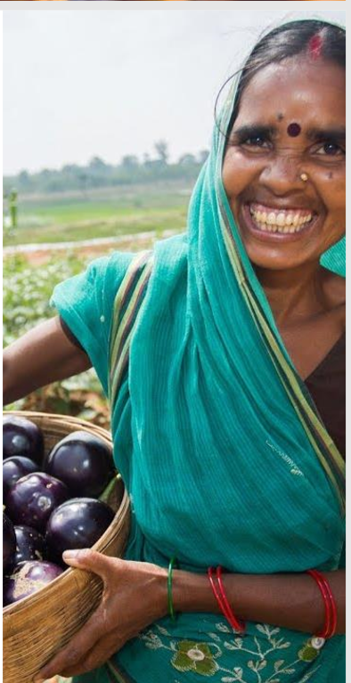

|
Agriculture : Additional Steps during COVID
- A number of measures supporting farmers was explained.
- Additional measures taken during last 2 months are below
- During lockdown period Minimum Support Price (MSP) purchases of amount more than Rs 74,300 crores
- PM KISAN fund Transfer of Rs 18,700 crores
- PM Fasal Bima Yojana claim payment of Rs 6,400 crores
|
|
|
|
Animal Husbandry : Additional Steps during COVID
- During Lockdown, Demand of Milk reduced by 20-25%.
- 560 Lakh litre per day(LLPD) procured by cooperatives against daily sale of 360 LLPD.
- Total 111 Crore Litres extra procured ensuring payment of Rs 4100 Cr.
- A new scheme to provide interest subvention @2% per annum to dairy cooperatives for 20-21.
- Additional 2% p.a interest subvention on prompt payment/interest servicing.
- This scheme will unlock 5000 Cr additional liquidity, benefitting 2 Cr farmers.
|
Fisheries: Additional Steps during COVID
- All 4 COVID related announcements for fisheries implemented
- Validity of Sanitary Import Permits (SIPs) for import of Shrimp Broodstock extended by 3 months
- Condoned delay up to 1 month in arrival of Brood stock consignments
- Allowed rebooking of Quarantine cubicles for cancelled consignments with no additional charges
- Verification of documents and grant of NOC for Quarantine relaxed from 7 days to 3 days
- Registration of 242 Registered Shrimp hatcheries and Nauplii Rearing Hatcheries expiring on 31.03.2020 extended for 3 months
- Operations of Marine Capture Fisheries and Aquaculture relaxed to cover Inland Fisheries
|
|
|
|
Rs 1 lakh crore Agri Infrastructure Fund for farm-gate infrastructure for farmers
- Lack of adequate cold chain & Post Harvest Management infrastructure in the vicinity of farm-gate causing gaps in value chains.
- Focus has been on short term crop loans while investment in long term agriculture infrastructure has often not been enough.
- Financing facility of Rs. 1,00,000 crore will be provided for funding Agriculture Infrastructure Projects at farm-gate & aggregation points (Primary Agricultural Cooperative Societies, Farmers Producer Organisations, Agriculture entrepreneurs, Startups, etc.)
- Impetus for development of farm-gate & aggregation point, affordable and financially viable Post Harvest Management infrastructure
- Fund will be created immediately.
|
Rs 10,000 crores scheme for Formalisation of Micro Food Enterprises (MFE)
- Scheme promotes vision of Hon. PM: ‘Vocal for Local with Global outreach’
- Unorganised MFEs units need technical upgradation to attain FSSAI food standards, build brands and marketing
- A Scheme will be launched to help 2 lakh MFEs attain attain above goals
- Existing micro food enterprises, Farmer Producer Organisations, Self Help Groups and Cooperatives to be supported
- Cluster based approach (e.g. Mango in UP, Kesar in J&K, Bamboo shoots in North-East, Chilli in Andhra Pradesh, Tapioca in Tamil Nadu etc.)
- Expected outcomes: Improved health and safety standards, integration with retail markets, improved incomes
- Will also help in reaching untapped export markets in view of improved health consciousness.
|
|
|
|
Rs 20,000 crores for Fishermen through Pradhan Mantri Matsya Sampada Yojana (PMMSY)
- Critical gaps in fisheries value chain
- Government will launch the PMMSY for integrated, sustainable, inclusive development of marine and inland fisheries.
- Rs 11,000 Cr for activities in Marine, Inland fisheries and Aquaculture
- Rs. 9000 Cr for Infrastructure - Fishing Harbours, Cold chain, Markets etc.
- Cage Culture, Seaweed farming, Ornamental Fisheries as well as New Fishing Vessels, Traceability, Laboratory Network etc. will be key activities.
- Provisions of Ban Period Support to fishermen (during the period fishing is not permitted), Personal & Boat Insurance
-
- Will lead to Additional Fish Production of 70 lakh tonnes over 5 years.
- Employment to over 55 lakh persons; double exports to Rs 1,00,000 Cr.
- Focus on Islands, Himalayan States, North-east and Aspirational Districts.
|
National Animal Disease Control Programme
- National Animal Disease Control Programme for Foot and Mouth Disease (FMD) and Brucellosis launched with total outlay of Rs. 13,343 crores.
- It ensures 100% vaccination of cattle, buffalo, sheep, goat and pig population (total 53 crore animals) for Foot and Mouth Disease (FMD) and for brucellosis.
- Till date, 1.5 crore cows & buffaloes tagged and vaccinated.
|
|
|
|
Animal Husbandry Infrastructure Development Fund - Rs. 15,000 crore
- Many areas in country with high milk production having great potential for private investment in Dairy
- Aim to support private investment in Dairy Processing, value addition and cattle feed infrastructure
- An Animal Husbandry Infrastructure Development Fund of Rs. 15,000 crore will be set up.
- Incentives to be given for establishing plants for export of niche products.
|
Promotion of Herbal Cultivation : Rs. 4000 crore
- National Medicinal Plants Board (NMPB) has supported 2.25 lac hectare area under cultivation of medicinal plants
- 10,00,000 hectare will be covered under Herbal cultivation in next two years with outlay of Rs. 4000 crore
-
- Will lead to Rs. 5,000 crores income generation for farmers
- Network of regional Mandis for Medicinal Plants.
- NMPB will bring 800 hectare area by developing a corridor of medicinal plants along the banks of Ganga.
|
|
|
|
Beekeeping initiatives –Rs 500 crores
- Beekeeping is a livelihood supporting activity for rural areas;
- Increases yield & quality of crops through pollination;
- Provides honey and other beehive products like wax.
Government will implement a scheme for:
- Infrastructure development related to Integrated Beekeeping Development Centres, Collection, Marketing and Storage Centres, Post Harvest & value Addition facilities etc;
- Implementation of standards & Developing traceability system
- Capacity building with thrust on women;
- Development of quality nucleus stock and bee breeders.
This will lead to increase in income for 2 lakh beekeepers and quality honey to consumers.
|
From ‘TOP’ to TOTAL - Rs 500 crores
- Supply chains have been disrupted and farmers are not being able to sell their produce in the markets
-
- Distress sale and reduction of price of perishable fruits and vegetables at the farm level needs to be prevented.
-
- Operation Greens will be extended from Tomatoes, Onion and Potatoes (TOP) to ALL fruits and vegetables (TOTAL).
-
- Scheme features will be as follows:
-
- 50% subsidy on transportation from surplus to deficient markets.
-
- 50% subsidy on storage, including cold storages.
- Pilot for 6 months – Will be expanded and extended
-
- Expected outcomes: Better price realisation to farmers, reduced wastages, affordability of products for consumers
|

|
|
|
Amendments to Essential Commodities Act to enable better price realisation for farmers
- EC Act, 1955 was enacted in days of scarcity.
- Need to enable better price realisation for farmers by attracting investments and making agriculture sector competitive
- Agriculture food stuffs including cereals, edible oils, oilseeds, pulses, onions and potato to be deregulated.
- Stock limit to be imposed under very exceptional circumstances like national calamities, famine with surge in prices.
- No such stock limit shall apply to processors or value chain participant, subject to their installed capacity or to any exporter subject to the export demand.
- Government will amend Essential Commodities Act.
|
Agriculture Marketing Reforms to provide marketing choices to farmers
- Farmers bound to sell agriculture produce only to Licensees in APMCs
- Such restriction of sale is not there for any industrial produce
- Results in Hindrances in free flow of Agricultural Produce and Fragmentation of Markets and Supply Chain;
- Less price realization for farmers.
A Central law will be formulated to provide -
- Adequate choices to farmer to sell produce at attractive price;
- Barrier free Inter-State Trade;
- Framework for e-trading of agriculture produce.
|
|
|
|
Agriculture Produce Price and Quality Assurance
- Farmers lack an enforceable standard mechanism for predictable prices of crops at the time of sowing.
- Private sector investment in provision of inputs and knowhow in the agriculture sector hindered
- Facilitative legal framework will be created to enable farmers for engaging with processors, aggregators, large retailers, exporters etc. in a fair and transparent manner.
- Risk mitigation for farmers, assured returns and quality standardisation shall form integral part of the framework.
|
|